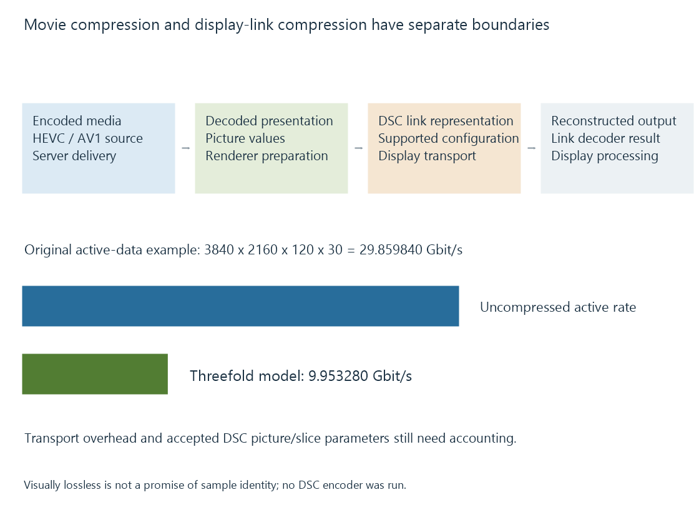

Display Stream Compression (DSC)
Display Stream Compression encodes the display-link picture representation to reduce transport demand under a supported source/sink configuration.
Display Stream Compression, or DSC, reduces the amount of picture data carried by a compatible display connection.
It operates at a different point from the HEVC or AV1 encoding of an Emby movie. The client ordinarily decodes the movie first, prepares an output presentation, then an implemented display-link path can encode that presentation with DSC.
Two compression layers belong to different routes
Stored/network movie encoding
-> media decoder
-> presentation pictures
-> supported DSC display-link encoding
-> display-link decoding
-> display output
DSC does not rewrite the source movie or directly reduce the server’s network bitrate. Its purpose is the local display transport.
VESA publishes the DSC specification and describes its performance as visually lossless. HDMI and DisplayPort have their own supported arrangements for carrying a DSC representation.

A rate reduction can change feasibility
Consider an original active-data budget with thirty bits per pixel, a 3840 × 2160 presentation and 120 picture occurrences per second:
Uncompressed active data = 3840 × 2160 × 120 × 30
= 29.859840 Gbit/s
Under a declared threefold reduction, the modeled compressed active rate is:
29.859840 / 3 = 9.953280 Gbit/s
The reduction is substantial, but this exercise omits transport overhead and all particular DSC mode constraints. It is not proof that a real twelve-Gbit/s path carries the mode.
The selected compressed bits-per-pixel target, format, slice arrangement, buffering and implementation limits still need to be accepted.
Source and sink must agree on the configuration
A DSC encoder and decoder need the relevant picture and compression parameters. Slicing organizes the picture into regions processed under the selected configuration.
Support for one DSC arrangement does not promise every picture extent, color representation or slice layout. A receiver, converter or dock can also constrain which compressed representation passes through it.
An intermediate device may forward an accepted compressed stream or reconstruct and generate another output, depending on its implementation. The route should identify which role it actually performs.
A cable does not add a missing DSC decoder to a display.
Visually lossless is a quality description
Visually lossless does not mean that every reconstructed sample is mathematically identical to the original under every mode.
That distinction matters when describing display-link data, but it should not be confused with the quality choices of the movie’s own codec. A heavily compressed source can have visible artifacts before the DSC stage is reached.
The DSC specification defines its coding behavior and configurations. Actual display performance and compatibility remain properties of the implemented route.
For an Emby session, changing a network transcoding bitrate and enabling a supported DSC output solve different capacity problems. One concerns media delivery; the other concerns the presentation signal sent to the display.
See Also
- DisplayPort video links
- HDMI link bandwidth: TMDS and FRL
- USB-C DisplayPort Alt Mode
- Video Bit Depth